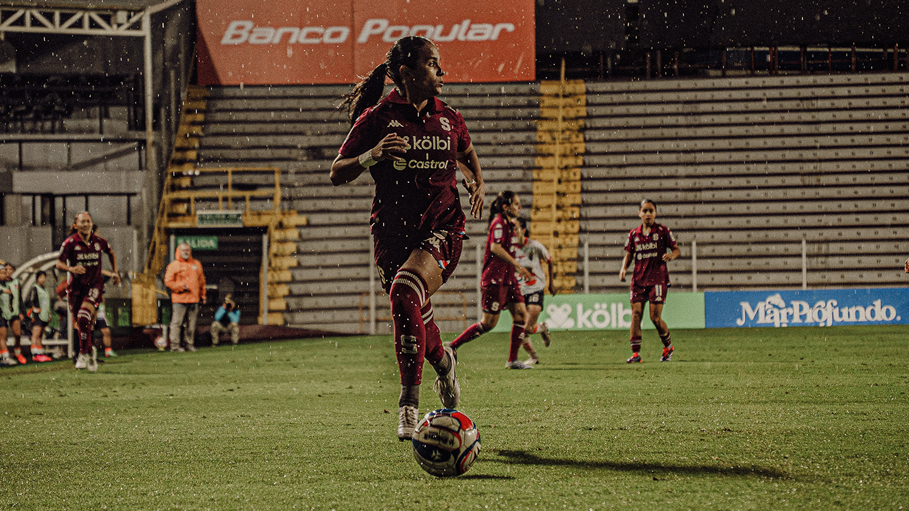

Carlos José Villanueva Ramos
📅 3 October 2026
Purple Pride: Six Saprissa FF Players Called Up to the National Team

The great momentum of Saprissa Women's continues to bear fruit internationally.
It was recently confirmed that six players from the squad have been officially called up to the Costa Rica Women's National Team for the upcoming FIFA window.
This is fantastic news that highlights the impact the team has in the national championship and a golden opportunity for these players to bring their talent to the national squad.
You can check the official list and details of the announcement on the Saprissa Official Website.
🇨🇷💜 Saprissa cuenta con un total de seis jugadoras convocadas para la Fecha FIFA que se efectuará en el presente mes
— Deportivo Saprissa 💜 (@SaprissaOficial) October 2, 2026
ℹ️ La Sele se prepara para el importante juego clasificatorio al Mundial contra Jamaica del 27 de noviembre
🧵 pic.twitter.com/vMA4DKGo40